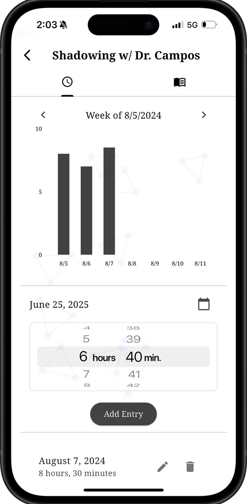
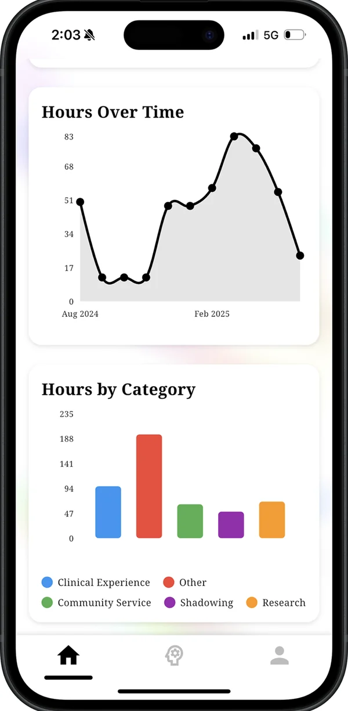
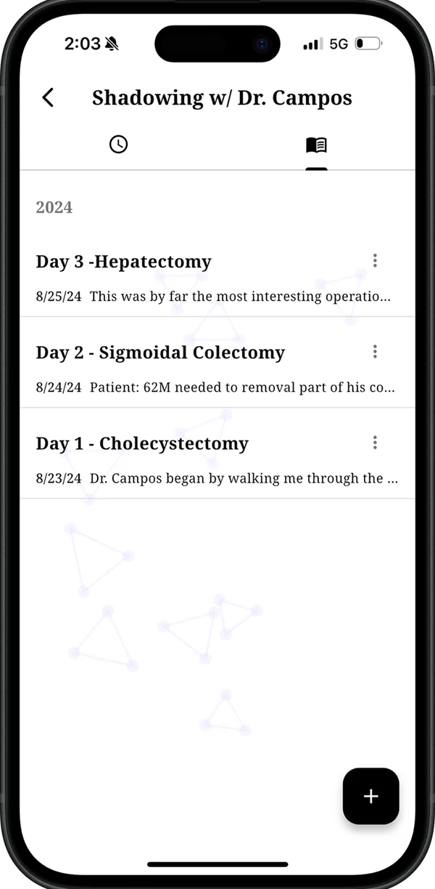
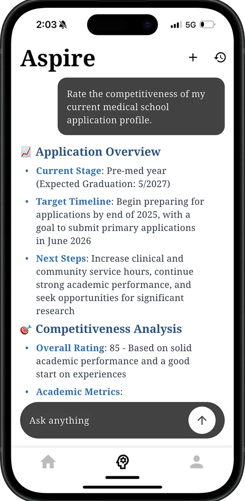

Hours, logged as you go
Pick the experience, pick the date, dial in hours and minutes. Entries roll up into weekly, monthly and all-time totals, split by category, with charts that show whether a category has gone quiet.
Aspire holds the hours, experiences, reflections and deadlines behind a medical school application — clinical, research, service, shadowing — so none of it has to be reconstructed from memory the week AMCAS opens.
Free. iPhone and iPad, iOS 13 or later. Or any browser — nothing to install.




What it does
Aspire is not trying to be a study app, a flashcard deck or a social network. It is a record of what you have actually done, and what is coming up.
Pick the experience, pick the date, dial in hours and minutes. Entries roll up into weekly, monthly and all-time totals, split by category, with charts that show whether a category has gone quiet.
Every experience carries its own dated journal beside the hours. Write down the case you saw or the assay that failed while you still remember it — it is the raw material for fifteen activity descriptions later.
An assistant that reads your GPA, MCAT, logged hours and journal entries before it answers. Ask what to do over the summer and the reply accounts for what you have already done, rather than describing a generic applicant.
The Opportunity Compass tracks program and application deadlines, each with its own checklist, and sends a reminder before one arrives instead of on the day.
When you want the grid rather than the dashboard, your whole profile is there as rows and columns — searchable, filterable by category, editable in place.
Categories
Aspire starts with five categories and a target for each. The targets below are just the defaults — set your own numbers per category, and the progress bars follow them.
| Category | Default target | Typically |
|---|---|---|
| Clinical Experience | 300 hours | Scribing, EMT, medical assisting, hospice, patient transport |
| Community Service | 300 hours | Non-clinical volunteering, tutoring, food banks, outreach |
| Research | 400 hours | Wet lab, dry lab, clinical research, posters and publications |
| Shadowing | 50 hours | Time spent observing physicians, ideally across specialties |
| Other | 500 hours | Leadership, employment, teaching, athletics, anything else |
Platforms
The full app, free on the App Store. iOS 13 or later. Logging and reminders work best here — it is the device that is already in your pocket.
The same app at app.aspiredoctor.com, with a wider layout on a laptop. Useful when you are writing applications and want your record open in another tab.
Sign in with Apple, Google or email and the same record appears in both. Hours logged on the phone are on the laptop by the time you open it.
Add the thing you are doing right now, log this week's hours, and let the record build from there. It is free, and it takes a couple of minutes.
Questions, bugs, feature requests:
admin@aspiredoctor.com